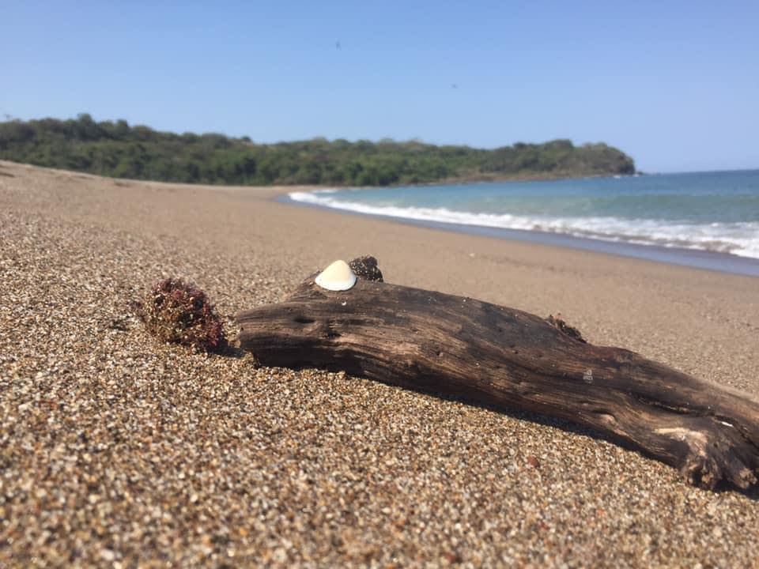
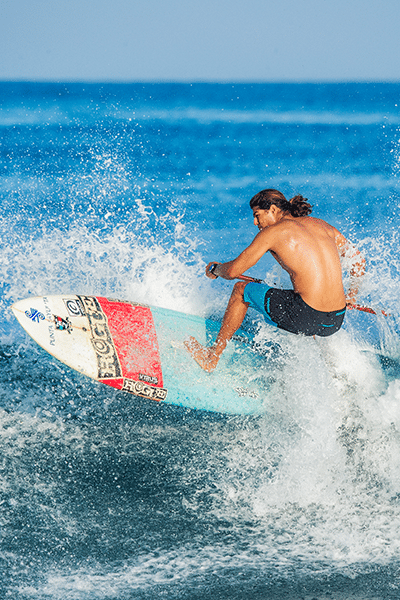
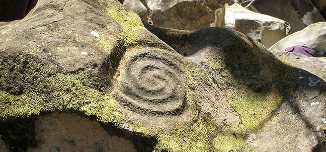
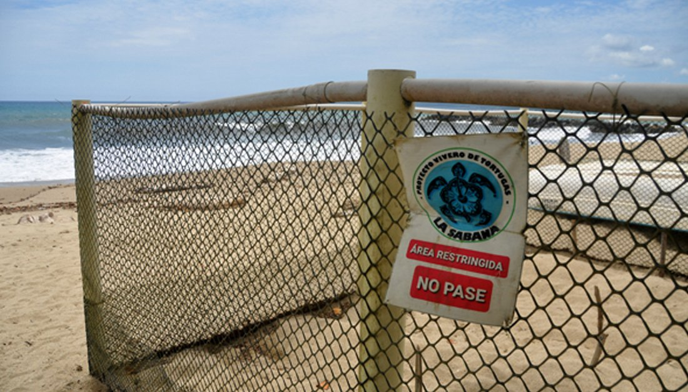
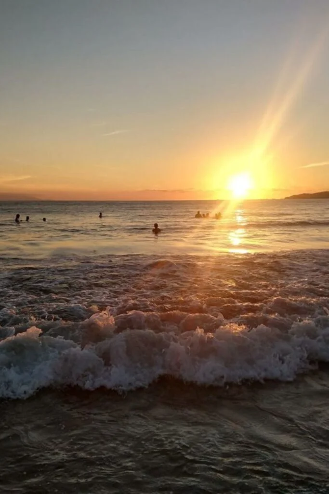
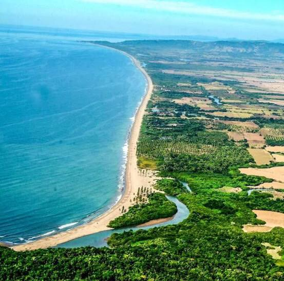

Olas, aventura y misticismo ancestral
Cerca de la localidad de Zacualpan, Playa Chila se presenta como una joya de mar abierto. Sus 7 kilómetros de arena dorada y su oleaje intenso la convierten en un imán para surfistas experimentados y amantes de la aventura.
Pero Chila es más que playa; es historia. La zona está impregnada de misticismo gracias a los antiguos grabados en piedra (petroglifos) que se encuentran en sus alrededores, testigos silenciosos de las culturas prehispánicas que habitaron Compostela.





Donde la adrenalina se encuentra con la cultura
Las olas aquí son constantes y potentes. Es el spot preferido para surfistas que buscan escapar de las multitudes de otras playas.
Explora los alrededores para descubrir rocas grabadas con espirales y símbolos antiguos, un tesoro arqueológico al aire libre.
Chila es un sitio clave de anidación. Visita el campamento local para aprender sobre la conservación de estas especies.
Gracias a su profundidad cercana a la orilla, es un lugar excelente para la pesca deportiva y recreativa.
Vive la experiencia completa acampando bajo las estrellas, arrullado por el fuerte sonido del oleaje del Pacífico.
Los paisajes vírgenes y las formaciones rocosas ofrecen escenarios dramáticos perfectos para fotógrafos de naturaleza.
Playa Chila es hermosa pero salvaje. Ten en cuenta:

Cerca de Zacualpan
Abierto / Oleaje Alto
Zona de Petroglifos
Surfistas y Aventureros
Descubre el lado salvaje y cultural de la Riviera Nayarit.
Ver en Google Maps